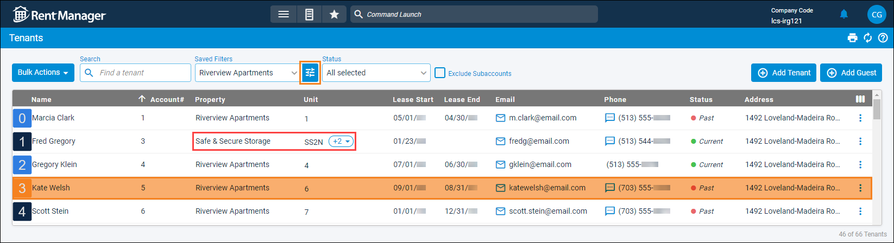
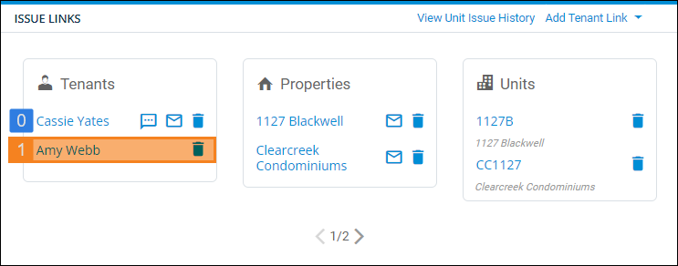
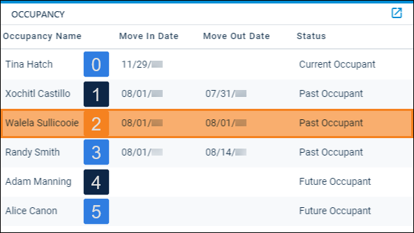

Source: https://rmxhelp.rentmanager.com/Topics/Express/KB/Script-Index-Tenant.htm
Tenant Indexing
In scripting, an index is how instances of an entity or other record are counted in a script. Indexing manages the one-to-many relationship that occurs between two classes.
When the Tenant class is used as a child class in a script (e.g., Unit().Tenant().Function), an index can be specified to uniquely identify tenants that are associated with the preceding class. For example, units can be associated with multiple past, current, or future tenants, and indexing can be used to identify each of those tenants.
Tenant Index Relationships
Tenants are indexed based upon when their account was created, from earliest to most recent, regardless of past, current, or future status. The oldest tenant has an index of 0, and the second oldest tenant account has an index of 1, and so on.
Property.Tenant Indexing
When tenants are created in Rent Manager, a property must be selected. This selection establishes the relationship between the property and the tenant.
To determine a tenant's index in relation to a property, do the following:
-
Go to
 arrow_forward Rental Info arrow_forward General arrow_forward Tenants.
arrow_forward Rental Info arrow_forward General arrow_forward Tenants.
The Tenants page displays. -
Click We usuall.
The Filter Detail pop-up displays. -
In the General Information section, enter the property you want to examine and click Apply.
The Filter Detail pop-up closes and the filtered list of tenants displays. -
Click the header Account # to sort by that column.
Once you filter and sort the tenants, you are able to see the tenants for a specific property ordered by when they were created.

More Information
Using the property filter ensures you see all tenants for a specified property. In the above image, the list is filtered for Riverview Apartments but shows one tenant, Fred Gregory, at the property Safe & Secure Storage. This is because this tenant has more than one lease, one of which is for Riverview Apartments. You can see the additional leases by clicking the drop-down next to the Unit name.
[Property.Tenant(3).FullName]
Using the information in the above image, this script returns Kate Welsh's full name, the fourth oldest tenant account at Riverview Apartments.
While this example illustrates the indexing relationship between a property and tenant, it is unlikely you would use a script to index in this way. A more realistic script would use a While loop to cycle through all tenants at a property and an If statement to filter the list of tenants to only examine current tenants at that property.
[$i = 0;
$output="";
While($i<Property.TenantCount(),
If(Tenant($i).Status() == "Current", $output = $output & Tenant($i).Contact.FullName() & linefeed, "");
$i=$i+1);
$output]
When finished, the script displays the full name of each current tenant, in the order their account was created from earliest to most recent. One tenant name displays per line.
ServiceManager.Tenant Indexing
You can view a tenant's index on an issue by viewing the order in which the tenants display on the Issue Links tile in the Tenants section.

[ServiceManager.Tenant(1).DefaultPhoneNumber]
Using the information in the above image, this script returns the phone number of Amy Webb, the second tenant linked to the service issue.
Unit.Tenant Indexing
Tenants associated with a unit are indexed based on their occupancy. The most recent (or current) tenant to occupy the unit has an index of 0, the tenant who lived there immediately before the current tenant has an index of 1, and the tenant before that has an index of 2.
You can determine a tenant's index at a unit from the unit's Occupancy tab.

[Unit.Tenant(2).AccountNumber]
Using the information in the above image, this script returns the account number of Walela Sullicooie, the third oldest tenant lease at the unit.
Related Preferences
If the system preferences option to Allow multiple tenants to occupy the same unit (roommates) is checked and the current roommates moved in on the same day, the account created first has an index of 0, the account created next has an index of 1, and so on. For more information, refer to General Options (System Preferences).